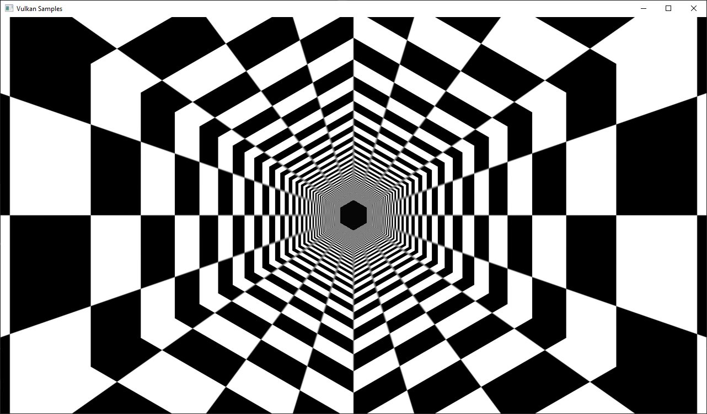
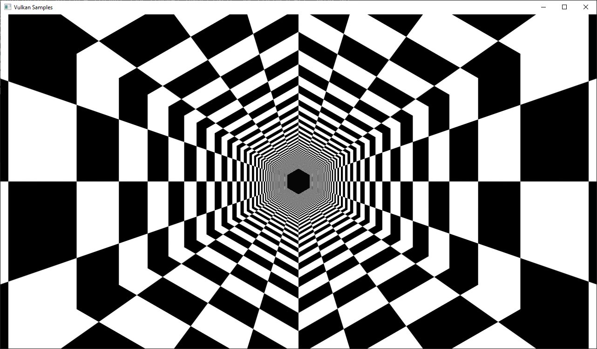

Run-time mip-map generation
Overview
Generates a complete texture mip-chain at runtime from a base image using image blits and proper image barriers.
This examples demonstrates how to generate a complete texture mip-chain at runtime instead of loading offline generated mip-maps from a texture file.
While usually not applied for textures stored on the disk (that usually have the mips generated offline and stored in the file) this technique is often used for dynamic textures like cubemaps for reflections or other render-to-texture effects.
Having mip-maps for runtime generated textures offers lots of benefits, both in terms of image stability and performance. Without mip mapping the image will become noisy, especially with high frequency textures (and texture components like specular) and using mip mapping will result in higher performance due to caching.
Though this example only generates one mip-chain for a single texture at the beginning this technique can also be used during normal frame rendering to generate mip-chains for dynamic textures.
Some GPUs also offer asynchronous transfer queues that may be used for doing such operations in the background.
To detect this, check for queue families with only the VK_QUEUE_TRANSFER_BIT set.
Comparison
Without mip mapping:
Using mip mapping with a bilinear filter:

Using mip mapping with an anisotropic filter:

Requirements
To downsample from one mip level to the next, we will be using vkCmdBlitImage.
This requires the format used to support the BLIT_SRC_BIT and the BLIT_DST_BIT flags.
If these are not supported, the image format can’t be used to blit and you’d either have to choose a different format or use a custom shader to generate mip levels.
The example uses the VK_FORMAT_R8G8B8A8_SRGB that should support these flags on most implementations.
Note: Use vkGetPhysicalDeviceFormatProperties to check if the format supports the blit flags first.
Points of interest
Image setup
Even though we’ll only upload the first mip level initially, we create the image with number of desired mip levels. The following formula is used to calculate the number of mip levels based on the max. image extent:
texture.mip_levels = static_cast<uint32_t>(floor(log2(std::max(texture.width, texture.height))) + 1);This is then passed to the image creat info:
VkImageCreateInfo image_create_info = vkb::initializers::image_create_info();
image_create_info.imageType = VK_IMAGE_TYPE_2D;
image_create_info.format = format;
image_create_info.mipLevels = texture.mip_levels;Setting the number of desired mip levels is necessary as this is used for allocating the correct amount of memory required the image (vkAllocateMemory).
Upload base mip level
Before generating the mip-chain we need to copy the image data loaded from disk into the newly generated image. This image will be the base for our mip-chain:
VkBufferImageCopy buffer_copy_region = {};
buffer_copy_region.imageSubresource.aspectMask = VK_IMAGE_ASPECT_COLOR_BIT;
buffer_copy_region.imageSubresource.mipLevel = 0;
buffer_copy_region.imageSubresource.baseArrayLayer = 0;
buffer_copy_region.imageSubresource.layerCount = 1;
buffer_copy_region.imageExtent.width = texture.width;
buffer_copy_region.imageExtent.height = texture.height;
buffer_copy_region.imageExtent.depth = 1;
vkCmdCopyBufferToImage(copy_command, staging_buffer, texture.image, VK_IMAGE_LAYOUT_TRANSFER_DST_OPTIMAL, 1, &buffer_copy_region);Prepare base mip level
As we are going to blit from the base mip-level just uploaded we also need to insert an image memory barrier that transitions the image layout to TRANSFER_SRC for the base mip level:
vkb::insert_image_memory_barrier(
copy_command,
texture.image,
VK_ACCESS_TRANSFER_WRITE_BIT,
VK_ACCESS_TRANSFER_READ_BIT,
VK_IMAGE_LAYOUT_TRANSFER_DST_OPTIMAL,
VK_IMAGE_LAYOUT_TRANSFER_SRC_OPTIMAL,
VK_PIPELINE_STAGE_TRANSFER_BIT,
VK_PIPELINE_STAGE_TRANSFER_BIT,
{VK_IMAGE_ASPECT_COLOR_BIT, 0, 1, 0, 1});Generating the mip-chain
There are two different ways of generating the mip-chain. The first one is to blit down the whole mip-chain from level n-1 to n, the other way would be to always use the base image and blit down from that to all levels. This example uses the first one.
Note: Blitting (same for copying) images is done inside of a command buffer that has to be submitted and as such has to be synchronized before using the new image with e.g.
a vkFence.
We simply loop over all remaining mip levels (level 0 was loaded from disk) and prepare a VkImageBlit structure for each blit from mip level i-1 to level i.
First the source for our blit. This is the previous mip level. The dimensions of the blit source are specified by srcOffset:
for (int32_t i = 1; i < texture.mipLevels; i++)
{
VkImageBlit image_blit{};
// Source
image_blit.srcSubresource.aspectMask = VK_IMAGE_ASPECT_COLOR_BIT;
image_blit.srcSubresource.layerCount = 1;
image_blit.srcSubresource.mipLevel = i - 1;
image_blit.srcOffsets[1].x = int32_t(texture.width >> (i - 1));
image_blit.srcOffsets[1].y = int32_t(texture.height >> (i - 1));
image_blit.srcOffsets[1].z = 1;
}Setup for the destination mip level (1), with the dimensions for the blit destination specified in dstOffsets[1]:
// Destination
image_blit.dstSubresource.aspectMask = VK_IMAGE_ASPECT_COLOR_BIT;
image_blit.dstSubresource.layerCount = 1;
image_blit.dstSubresource.mipLevel = i;
image_blit.dstOffsets[1].x = int32_t(texture.width >> i);
image_blit.dstOffsets[1].y = int32_t(texture.height >> i);
image_blit.dstOffsets[1].z = 1;Before we can blit to this mip level, we need to transition it’s image layout to TRANSFER_DST:
// Prepare current mip level as image blit destination
vkb::insert_image_memory_barrier(
blit_command,
texture.image,
0,
VK_ACCESS_TRANSFER_WRITE_BIT,
VK_IMAGE_LAYOUT_UNDEFINED,
VK_IMAGE_LAYOUT_TRANSFER_DST_OPTIMAL,
VK_PIPELINE_STAGE_TRANSFER_BIT,
VK_PIPELINE_STAGE_TRANSFER_BIT,
{VK_IMAGE_ASPECT_COLOR_BIT, i, 1, 0, 1});Note that we set the baseMipLevel of the subresource range to i, so the image memory barrier will only affect the one mip level we want to copy to.
Now that the mip level we want to copy from and the one we’ll copy to are in the proper layout (transfer source and destination) we can issue the vkCmdBlitImage to copy from mip level (i-1) to mip level (i):
vkCmdBlitImage(
blit_command,
texture.image,
VK_IMAGE_LAYOUT_TRANSFER_SRC_OPTIMAL,
texture.image,
VK_IMAGE_LAYOUT_TRANSFER_DST_OPTIMAL,
1,
&image_blit,
VK_FILTER_LINEAR);vkCmdBlitImage does the down sampling from mip level (i-1) to mip level (i) using a linear filter, if you need better or more advanced filtering for this you need to resort to using custom shaders for generating the mip chain instead of blitting.
After the blit is done we can use this mip level as a base for the next level, so we transition the layout from TRANSFER_DST_OPTIMAL to TRANSFER_SRC_OPTIMAL so we can use this level as transfer source for the next level:
vkb::insert_image_memory_barrier(
blit_command,
texture.image,
VK_ACCESS_TRANSFER_WRITE_BIT,
VK_ACCESS_TRANSFER_READ_BIT,
VK_IMAGE_LAYOUT_TRANSFER_DST_OPTIMAL,
VK_IMAGE_LAYOUT_TRANSFER_SRC_OPTIMAL,
VK_PIPELINE_STAGE_TRANSFER_BIT,
VK_PIPELINE_STAGE_TRANSFER_BIT,
{VK_IMAGE_ASPECT_COLOR_BIT, i, 1, 0, 1});
}Final image layout transitions
Once the loop is done we need to transition all mip levels of the image to their actual usage layout, which is SHADER_READ for this example.
Note that after the loop above all levels will be in the TRANSER_SRC layout allowing us to transfer the whole image with a single barrier:
vkb::insert_image_memory_barrier(
blit_command,
texture.image,
VK_ACCESS_TRANSFER_READ_BIT,
VK_ACCESS_SHADER_READ_BIT,
VK_IMAGE_LAYOUT_TRANSFER_SRC_OPTIMAL,
VK_IMAGE_LAYOUT_SHADER_READ_ONLY_OPTIMAL,
VK_PIPELINE_STAGE_TRANSFER_BIT,
VK_PIPELINE_STAGE_FRAGMENT_SHADER_BIT,
{VK_IMAGE_ASPECT_COLOR_BIT, 0, texture.mip_levels, 0, 1});Submitting that command buffer will result in an image with a complete mip-chain and all mip levels being transitioned to the proper image layout for shader reads.
Image View creation
The Image View also requires information about how many Mip Levels are used.
This is specified in the VkImageViewCreateInfo.subresourceRange.levelCount field.
VkImageViewCreateInfo view = vkb::initializers::image_view_create_info();
view.image = texture.image;
view.viewType = VK_IMAGE_VIEW_TYPE_2D;
view.format = format;
view.components = {VK_COMPONENT_SWIZZLE_R, VK_COMPONENT_SWIZZLE_G, VK_COMPONENT_SWIZZLE_B, VK_COMPONENT_SWIZZLE_A};
view.subresourceRange.aspectMask = VK_IMAGE_ASPECT_COLOR_BIT;
view.subresourceRange.baseMipLevel = 0;
view.subresourceRange.baseArrayLayer = 0;
view.subresourceRange.layerCount = 1;
view.subresourceRange.levelCount = texture.mip_levels;
VK_CHECK(vkCreateImageView(device->get_handle(), &view, nullptr, &texture.view));